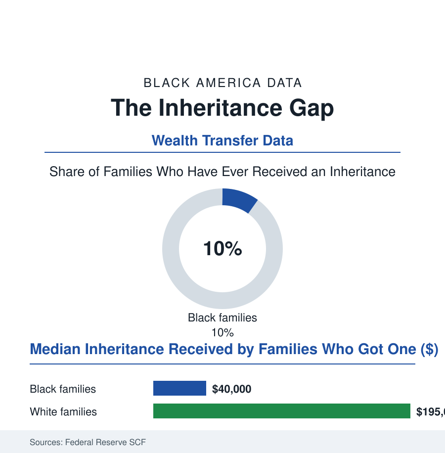

Black Census
The Inheritance Gap: The Wealth That Arrives by Envelope
White families receive inheritances at roughly twice the Black rate, in amounts several times larger — the transfer system's quiet compounding in the Federal Reserve data.

The largest wealth transfer in human history — the tens of trillions passing from the baby boom generation to its heirs in the financial press's projections — will arrive unevenly by design of the past: in the Federal Reserve's Survey of Consumer Finances, white families report having received an inheritance at roughly twice the rate of Black families, and the median amount received runs several times larger. The envelope, when it comes, is not the same size. This article reads the transfer file.
The Mechanics of an Unequal Inheritance
An inheritance is the past's wealth arriving in the present, and every row of the transfer table is an echo of an earlier table: the estate a family can leave is the homeownership file's equity, the retirement file's balances, the business file's saleable firm, compounded — which is why the SCF's receipt data read like this section's previous articles summed. The magnitudes in the recent waves: roughly one in five white families reporting an inheritance received against roughly one in ten Black families; the conditional medians (among receivers) in the tens of thousands against the near-two-hundred-thousand range; the expected inheritances (the survey's forward question) running the same ratios into the next generation — the transfer system compounding the wealth gap forward on schedule, the financial press's 'great wealth transfer' arriving, in the distributional accounts' projections, predominantly in households already at the distribution's top. The living transfers run beside the estates in the Health and Retirement Study's panels: the inter vivos gifts (the down-payment help, the tuition paid directly, the rent covered in the expensive city — the 'bank of Mom and Dad' the housing literature quantifies as one of the country's largest mortgage lenders) flowing at similarly skewed rates and amounts, invisible to the probate record and decisive in the first-home file: the young white buyer whose down payment has grandparents inside it, bidding against the young Black buyer whose family wealth runs the other direction — the sandwich transfers of the caregiving file, the adult child's income flowing up to parents and grandparents rather than down. The direction of flow is the transfer file's whole story: in one set of families, money descends; in the other, it is summoned upward, and both flows are love — only one of them is also capital.
Probate, Heirs' Property, and the Leaks
What wealth does accumulate in Black families then meets the transfer system's friction at its least forgiving points in the legal data: the estate-planning gap (the survey findings that Black adults hold wills at lower rates — the intestacy defaults then governing the family home's descent, fractionating it among heirs across generations into the heirs'-property tangle of the land file, the partition-sale machinery waiting at the tangle's end), the probate costs' regressivity (the fixed fees of the legal system against the small estate — the house that is the whole inheritance paying the system's full toll), the life-insurance counterweight (the insurance article's data: the community's century-old technology for manufacturing an inheritance where assets were barred — the policy as the poor family's estate plan, still over-indexed in the ownership data, its payouts the most common inheritance Black families receive in the transfer surveys' composition rows), and the newest instruments' reach (the beneficiary deeds, the transfer-on-death accounts, the community land and estate clinics of the legal-aid data — the Uniform Partition of Heirs Property Act's adoption state by state in the recent legislative record, the reform aimed at exactly the fractionated-title leak). The forward rows hold the file's tension: the boomer generation's Black homeowners — the fair-housing era's buyers — are now the first broad Black generation with houses to leave, and the transfer data's next waves will record whether the machinery delivers their equity to their children or dissipates it in the friction — the difference, compounded, being a measurable share of the next century's wealth table.
Reading the Transfer Data
Wealth gaps are usually photographed as a moment; the inheritance data develop the film: advantage arriving by envelope, generation after generation, each delivery financing the next one's down payment, tuition, and risk. The Federal Reserve counts the transfers without sentiment. A family that receives capital at twenty-five lives in a different economy than one that sends it upward — and both families, the surveys show, would describe what they did with the same word: helping.
More in Black Census
The Black Population of the United States: Size, Definitions, and Distribution
The Black population of the United States totals 52.8 million — 15.4 percent of the nation. How the Census Bureau defines and counts the population, and where it lives.
Black Median Household Income in the United States
Black median household income stands at $56,490 in the Census Bureau's annual income report — how the figure is measured, how it compares, and what drives it.
The Black Poverty Rate: Levels, Children, and the Long Trend
The official Black poverty rate is 17.1 percent — against 11.1 percent nationally and 7.7 percent for non-Hispanic White Americans. How poverty is measured and what the data show.
Source: Federal Reserve Survey of Consumer Finances and Distributional Financial Accounts; Health and Retirement Study; U.S. Census Bureau wealth tables.